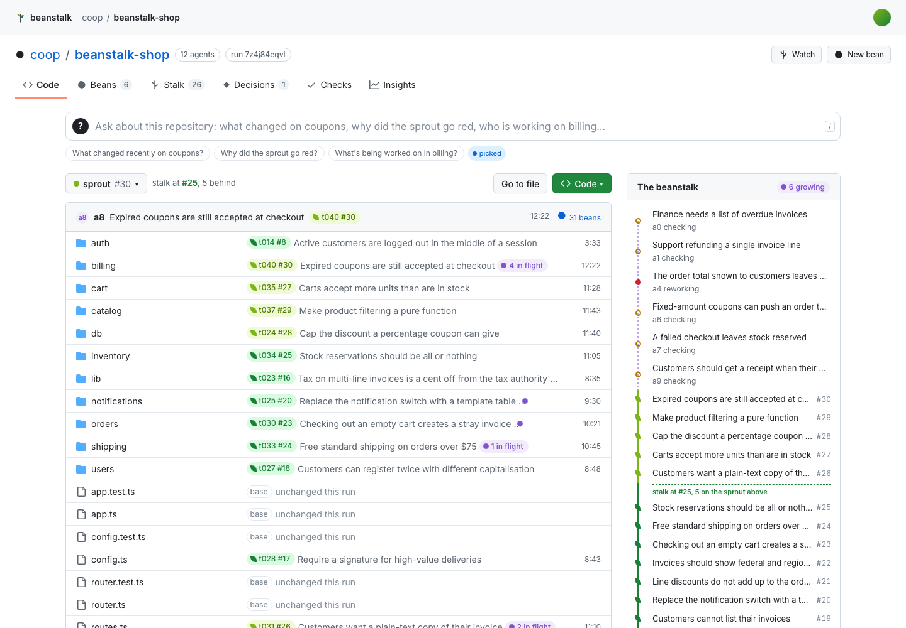
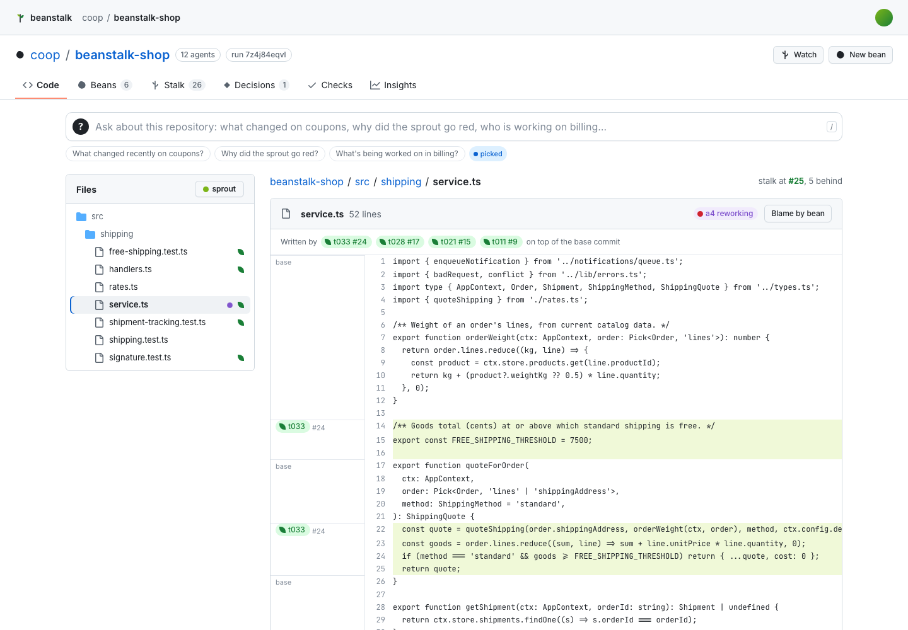
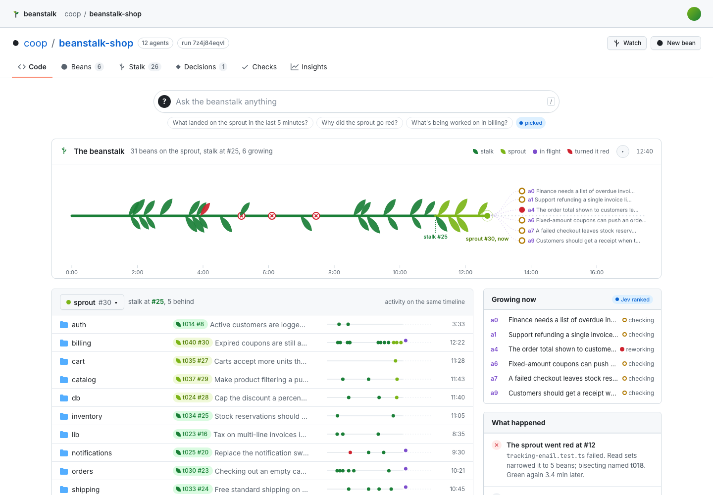
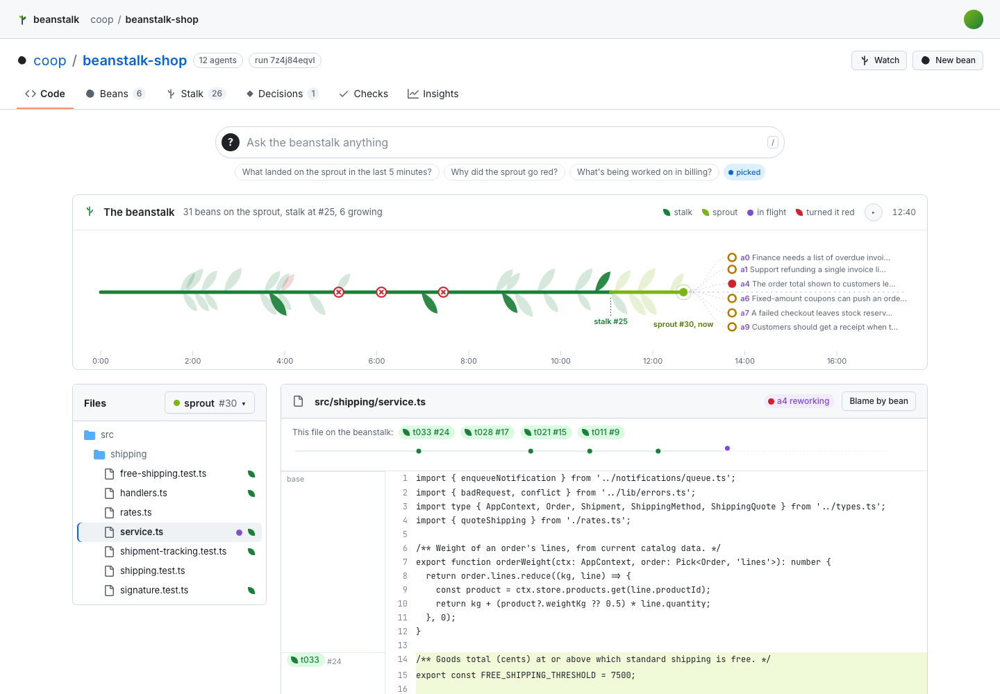
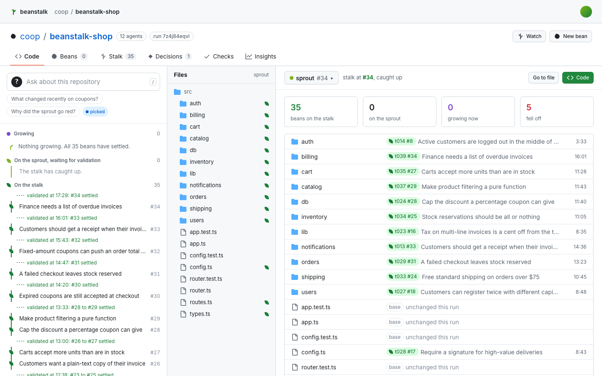
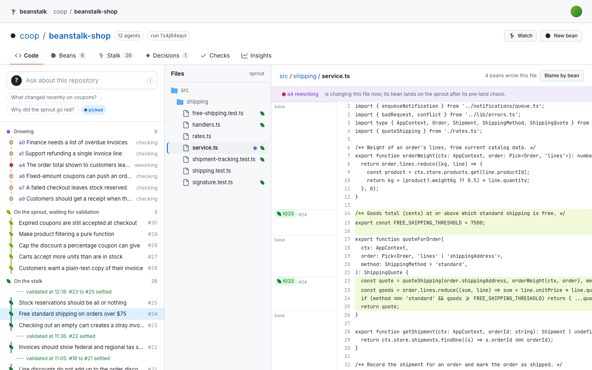
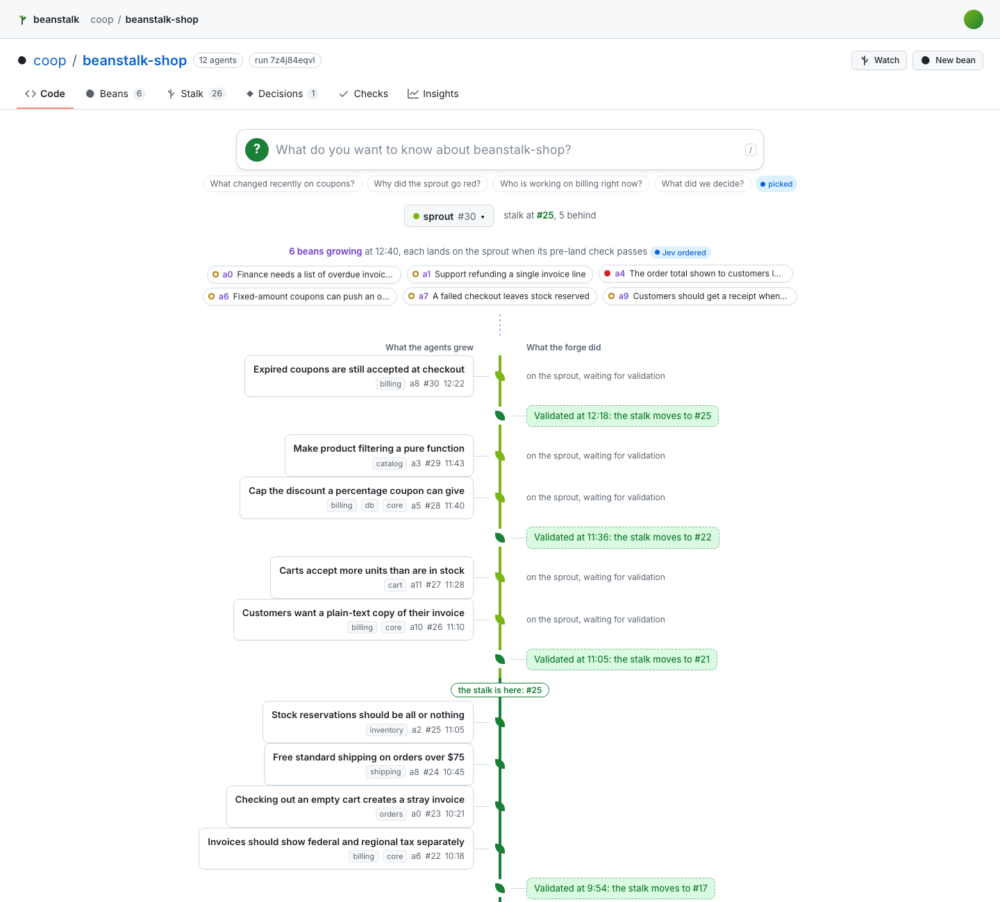
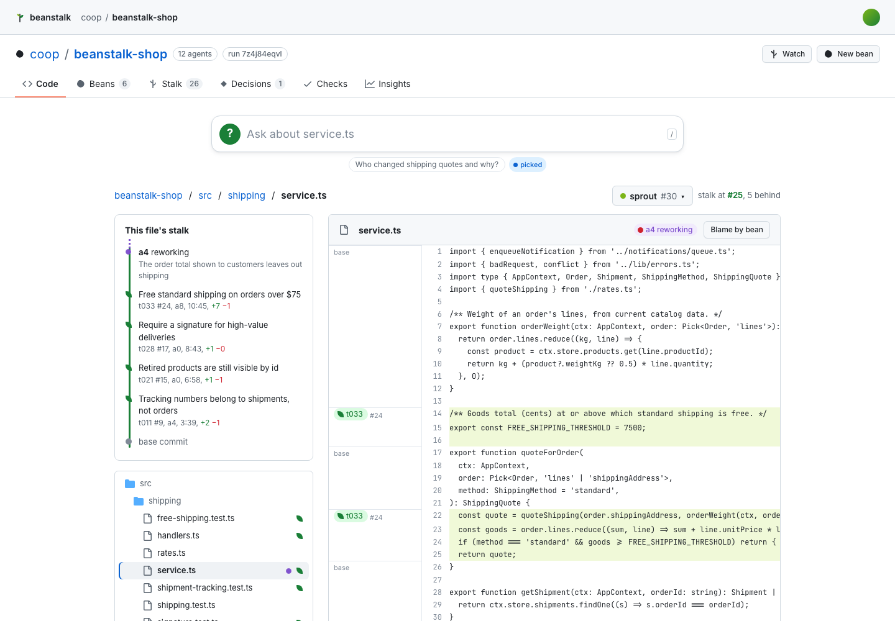

Four ways to show the repository
Static mockups on the recorded run 7z4j84eqvl. Each opens on the repo home; add ?view=files for Files, ?t=end for the finished run, ?t=400 for any second, ?theme=dark.


B. Stalk hero
A wide horizontal beanstalk across the top, the file list on the same timeline below.
Open B



D. Centre stalk
A big "?" over a centred stalk: what agents grew on the left, what the forge did on the right.
Open D
